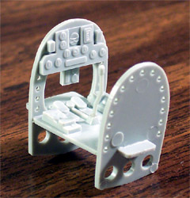
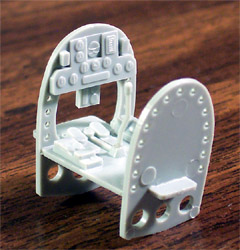

Arii 1/48 Scale Nakajima Ki-44 Shoki (Demon or Devil-Queller)
Allied code name “Tojo”
Kit # A328-800 MSRP $13.98
Model, images and text Copyright © 2004 by Matt Swan
Developmental History
It known to almost every student of the Pacific air war that the Japanese high command preferred aircraft with long range and maneuverability. This came usually at a lack the speed and the amount of damage that could be taken. The Ki-44 was a complete departure from the standard emphasis placed on Japanese aircraft design. Soon after the Ki-43 Oscar and the A6M Zero entered combat service the Japanese military considered how to best defend the Home Islands. If strategic bombers were to raid Japan, long range and maneuverability would not matter. Speed and climb would be paramount. It was decided that the Ki-44 was to be built strictly as an interceptor, with emphasis being placed on speed and climb rather than on maneuverability. The specification called for a maximum speed of no less than 373 mph at 13,125 feet. This altitude was to be attained in a time no greater than 5 minutes. Armament was to consist of a pair of 7.7-mm and a pair of 12.7-mm machine guns.
The engine selected for the new interceptor was Nakajima's Ha-41 fourteen-cylinder double-row radial. This engine had actually been intended for bomber aircraft and had a rather large diameter. Nevertheless, the design team was able to marry this engine to a fuselage of narrow cross section, producing an aircraft that always looked to me like it had "too much engine". The wing area was relatively small for an aircraft of the size and weight of the Ki-44, leading to a high wing loading and a relatively high landing speed that could be deadly to less experienced pilots. A set of “butterfly” combat flaps was fitted for improved maneuverability.
The first Ki-44 prototype took to the air for the first time in August of 1940. The first test flights were generally encouraging, and handling was considered rather good despite the high wing loading. However, the landing speed was somewhat greater than that for which most Japanese pilots were accustomed, and the big engine restricted the forward visibility while the plane was taxiing on the ground. The pre-production aircraft and two of the prototypes were turned over to the Army for service trials on September 15, 1941. They were handed over to an experimental squadron, the Kawasemi Butai, for service trials. The unit was sent to China for combat trials, and in May 1942 was renamed 47th Dokuritsu Dai Chijugo Chutai. During the invasion of Singapore Ki-44s were pitted against the RAFs best fighters in the Pacific. This proved to be a fairly false test since the RAF fighter squadrons in the Pacific during 1942 consisted mainly of Brewster Buffalos and Hawker Hurricanes. After that the Shoki was not seen much outside of Japan, although several served in New Guinea and Burma. Several also were seen over Rabaul. But the Ki-44 was mainly concentrated around Japan's large industrial cities.
When it was first encountered by the Allies over China, it was assigned the code name Tojo by Allied intelligence working in that theatre. This name was a departure from the standard Allied coding convention, in which boys' names were assigned to Japanese fighters. However, a special request was made that the Tojo name should be allowed to stick, and all coordinating Allied intelligence agencies readily agreed.
Early in it’s service life the Shoki was unpopular amongst the IJAAF pilots, all who had been flying the Ki-27 and Ki-43. Pilots soon learned to use its roll rate, climb-and-dive speed and excellence as a gun platform. Eventually the Ki-44 was accepted as standard equipment. The Nakajima Ki-44 Shoki interceptor was the only interceptor fighter serving with the Japanese Army when the B-29 campaign against Japan began. At that time, it was the fastest-climbing Japanese fighter in service, and was one of the few aircraft capable of reaching the B-29s at the altitudes at which they operated. It became one of the preferred interceptors of the B-29, along with the Ki-45 Toryu. The Shoki was not a great dogfighter, such as the Oscar or Frank, but it climbing ability made it excellent as a bomber interceptor.
A notable mission occurred when a small force of Ki-44's intercepted 120 B-29's on February 19, 1945 and destroyed ten of them. Many other Shokis expended themselves in suicide ramming attacks against the long-ranging B-29s. The design was made obsolete by the advent of the superb Ki-84-I Hayate Frank and only about 1225 were built in three different variations.
 The Kit
The Kit
Arii is a well-known Japanese model company but gets little recognition or marketing here in the continental U.S.. These kits are readily available from larger Internet model distributors or from E-Bay and are relatively inexpensive considering what you get. And just what do you get? Inside this rather conventional two-piece box there are three sprues of parts molded in a very light blue plastic (I know in the picture it looks gray but it is blue). We are usually expecting our models to be of the common light gray polystyrene so this color variance is very noticeable. The plastic itself is very soft and if you are not using a fresh, sharp razor to remove the parts from the sprue you will tear the plastic.
All of the parts display very finely engraved details; panel lines, rivets and control surfaces. The detail is so fine that I am immediately concerned about obliterating it with sanding and/or paint. The parts are, for the most part, very clean with hardly any flash. There are many injector pin markings and many of them carry some flash as well. Most of these markings are in areas that will not be a concern. The few exceptions are around the interior of the engine cowling and the interior of the landing gear doors. The doors have three or four marking each and about half are raised. These are not so bad because you can simply shave them down, the recessed pin markings all need to be filled.
Below there are three pictures that you can click on to view larger images. I shall talk about each of these in turn. The first picture shows one of several casting imperfections. This one on the left wing is a huge mold imperfection that is raised above the rest of the wing surface. When this is shaved off all the recessed detail is destroyed and must be rescribed. There is another on the opposite wing that is not as bad and yet another below the wing. The area mark 1 is an oddity. While all the details on this model are recessed, this one spot on the opposite side only is raised. The service port on the left side is recessed. An area that is commonly thought of as an error is actually a correct representation of the combat butterfly flap (Thanks to Hank for identifying this). This is what appears to be a serious misalignment of the lower wing half to the upper wing half and the temptation to fill it with putty is great.
The middle picture shows us the basic cockpit. The dash has a fairly decent array of raised instrument faces and will probably paint up nicely. The structural members show nice lightening holes including several in the lower portions that will never be seen once the fuselage is closed up. Note on the backside of the bulkhead the injector pin marking and it’s accompanying flash. The last picture shows the molded detail on the cockpit walls. If you build this with the pilot in place you will be hard pressed to see any of this detail when completed.
Other items of interest are the nicely molded engine banks, the single piece canopy and the wheels. If you want to open the cockpit you will have to contend with cutting that canopy into its individual pieces or replacing it with a Vac piece. The wheels have poor detail and would do well to be replaced with some resin pieces. Including the single clear piece, this kit totals out at sixty-one pieces.
 

Decals and Instructions
This kit includes decals for three different aircraft, two are in a natural metal finish, the first is that on the box and the second is nearly identical with red tail markings and blue kill markings.
The third is a rather unusual camouflage pattern. The decals all look to have good print registry and the color density appears good. I am suspicious that they may be a little on the thick side as I can feel the decal when I slide my finger across the paper. There is a single full color sheet included in the box for the second and third aircraft covering decal placement and exterior colors. You must use the box art as your guide for that aircraft.
The instructions consist of a single eight and a half by eleven inch sheet with text printed in brown ink on both sides. What’s really fun is 98% of that text is in Japanese. While I do speak a little I read none. There are a few very basic tips in English such as “Assemble the seat” and “Assemble the right wheel”. For us non-Japanese reading modelers we must rely on outside reference material for color codes. The nine exploded views are well done and construction looks like it will be very straightforward.
Conclusions
This is not really a bad kit. It has a few minor problems but nothing that any competent modeler could not deal with. The engraved detail is very nice and the basic parts fit is very good. The decals look good and include some service stencils. The directions could benefit from some additional English, especially concerning some color call-outs for the interior pieces. This is not the only 1/48 Ki-44 made, Hasegawa has one on the market and there are several detail packages aimed at that kit. It seems logical that these same packages could be converted to the Arii kit. Aeromaster does alternative decals, Cutting Edge, Eduard and Fast Frames offer mask sets, Engines and Things, Eduard, Jaguar, Pacific Coast Models and True Details all offer detail packages for the Ki-44 as well.
You could dump a lot of cash into buying the Hasegawa kit and all sorts of add-ons or you could get one of these, have some fun and build a nice looking, low budget Tojo.
Construction
This kit is of standard manufacture and design so it follows that construction will be of a typical nature also. I began with the interior, working over the cockpit area. The directions really are of no help when it comes to painting the interior so I have to do a little research. My research was inconclusive; I cannot find any interior shots of the Ki 44 that clue me into the correct color. I have two simple choices; a light pea green or a light teal – I chose the teal and proceeded with the construction. After gluing the basic interior pieces together and airbrushing them I decided that I was not happy with the detail on the dash. I shaved off the instrument details, painted the faces white and placed Reheat instrument decals over the faces – it looked much better but, unfortunately will not be visible when complete. Oh well, I know it’s there. I glued the fins onto the cowling and proceeded to the engine while this dried. The engine is a nice twin bank affair but, like the dash, will not have much visibility when complete. With this is mind I did not waste a lot of time detailing it but simply painted it with some Burnt Iron and dry brushed the cylinders with some silver. I did trace the ignition harness with some red just in case the flashlight brigade should show up.
I painted the kit pilot figure and placed him in position. The wings were quickly assembled and set aside to dry. I immediately returned to the fuselage, installed the cockpit and closed up the fuselage pieces. So far fit has been very good. Once the glue had set on the wings the seam was trimmed and sanded then the wings were glued in place. I attached the engine and the elevators at this time also. There are a few places that need some putty at this point. The fuselage seam right in front of the cockpit needed a little help and the lower fuselage seam had a little fill added also. The rear joint of the wing to the fuselage was not very good and had to be filled and then rescribed to show the edge of the combat butterfly flaps. In the pictures below you can see the engine before the cowling is glued in place and then you cannot see the engine. Once the propeller is in place it just becomes a black hole so if you are building this kit save your time and be brief with that engine.
While all this was going on I put together the drop tanks less the pesky little legs that they mount on and worked on the landing gear. I had to give some thought to the final paint scheme, the kit offers three different schemes but the camouflaged scheme really caught my eye.
Recently I have been playing around with salt chipping and this particular scheme was just begging to be worked over with some salt. Once I had settled on this scheme the plan of attack was clear. First I would prime my model with, not gray but silver primer. I can kill two birds with one stone here. The primer lets me find my defects and becomes the base for my salt chipping. Once the model had been cleared of defects and the primer had set up I was ready to get salty.
Below there are four pictures that are all linked to larger pictures so if you need a closer look just click on the small image. I began the salt process with a round lettering brush and a cup of tap water. Working in sections approximately the size of a postage stamp I wet the brush and drew it across the model where I wanted some chips then took a pinch of salt and sprinkled it across the area. I did not salt the rudder, elevator surfaces or ailerons, as these were fabric covered. This also gave me someplace to hang onto the model as the salting progressed. In picture number on we have a silver primed model that is completely salted. In picture number two the basic colors have been applied and most of the salt has been flaked off with a toothpick. The crystals along the leading edge of the wing have been left in place so I can mask that area and paint the yellow edge. In number three we see the same thing for the top of the wing and the area for the black antiglare panel still has salt crystals in place also. And finally in number four all the salt crystals have been removed and the gear legs are in place.

Other small details like wheels, boarding step, gun barrels and pitot tube are installed. I also spent some time masking the canopy. There are several different layers of paint on this now and the chipping has created a slightly rough surface so it is imperative that a good coat of Future floor polish goes on before any decals can be placed.
 It is very important that the model be washed before coating with Future to make sure the entire salt residue has been removed or you will get a lot of fogging in the Future. While my model was drying I took a close look at my decals and found there were little tiny fractures throughout the decals. This could have been a disaster had I not taken that close look. I used some Testors decal fixative and sprayed a good coat onto the decals and let them dry overnight. After the model was Futured the decals went on without a hitch.
It is very important that the model be washed before coating with Future to make sure the entire salt residue has been removed or you will get a lot of fogging in the Future. While my model was drying I took a close look at my decals and found there were little tiny fractures throughout the decals. This could have been a disaster had I not taken that close look. I used some Testors decal fixative and sprayed a good coat onto the decals and let them dry overnight. After the model was Futured the decals went on without a hitch.
I trimmed up the propeller and spinner and painted them to match the color sheet in the kit. While my decals were drying I went back to the drop tanks and those pesky mounting legs. Each tank has four independent legs to mount to the wing. Each leg has a sprue gate that needs to be cleaned off and each one has a nasty mold separation seam along each side that needs to be shaved. Did I mention that each leg was about a quarter inch long? By time I had each one cleaned up I was wondering if it would have been easier to just cut new ones from some plastic stock. To attach these buggers I placed a drop of Tenax 7R onto the tank mounting hole and placed each leg to the tank but while still flexible placed the tank to the wing to align the four legs. I don’t want to actually glue the tank on yet because I have not weathered the underside of the model yet.
Back to the decals, once they had dried down I sealed them with another coat of Future and let that dry for a few days before the weathering began. Weathering was simply a sludge wash as I have described in The Basics of Weathering. This was followed with some Tamiya X-19 Smoke for exhaust staining and yet another coat of Future – boy I use a lot of this stuff. After the final coat of Future had dried I added some ground pastel chalk overtop the smoke to accent the exhaust staining even further.
The last details are addressed such as the aerial, those pesky drop tanks and the canopy. As a final touch I have added a few figures from an old Tamiya Zero that I’ve placed alongside the aircraft on a stock diorama base along with some items from a Verlinden Luftwaffe ground grew. In the first picture below the propeller was given some motion by my daughter standing off set with a can of compressed air. You may click on any of the images below to view larger pictures.
Now let me talk a little about my ‘stock diorama base’. I have built a couple of large bases that can be used for various photographic purposes. For this one I used a 20-inch by 30-inch sheet of Xacto cutting board.
Using a standard 2-inch house painting brush I painted it with white glue then sprinkled various railroad grass and dirt materials across it to create a generic grassy field. As the glue dries it tends to make the Xacto board curl up. I had planned on attaching this to a piece of plywood anyway so that became the next step. I simply stapled it around the edges onto a half-inch plywood board cut to the same dimensions. I cut some wooden edge trim for the sides, stained it a red mahogany and nailed it over the edge of the cutting board using one inch brads. Once the board was secured and the glue dried I attached brush material and a few trees purchased from the model railroad section of our local hobby shop. I used a hot glue gun to attach these items. The final details were some stones salvaged from a decommissioned fish tank and set in some white glue. A board this size allows me to place aircraft in different positions for photography and not have them all look the same. When not in use it stands on end near one of my modeling desks. Total investment in this board is about $20.00.


{kind=link}
{kind=link}
{kind=link}
{kind=link}
{kind=link}
{kind=link}
{kind=link}
{kind=link}
{kind=link}
{kind=link}
{kind=link}
{kind=link}
{kind=link}